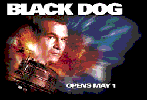
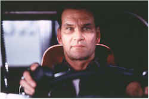
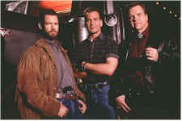

Contents | Features | Reviews | News | Archives | Store |
 |
|
| Movie Credits | Buy It! |
Black Dog
Review by Elias Savada
Posted 1 May 1998
|  | Directed by Kevin Hooks. Starring
Patrick Swayze, Randy Travis, Written by William Mickelberry, |
Hey, you like 18-wheelers (Have you driven a big Ford lately?), country-and-western music (yes, there are millions out there that do), and an All-American meal (as in meat loaf), then here's a film for you. Here is a tale of mass destruction on the nation's roadways. I didn't wait around through the credits to see if AAA put a disclaimer on it, but there are some huge fireball crashes spewing shrapnel all over the highways from Atlanta to New York (but filmed in North Carolina). Be sure to fasten your seatbelt before viewing.
For those urban-dwellers otherwise inclined, you might prefer some other fare. Perhaps catching up on all that spam you've been getting, or surfing obscure websites. Black Dog is a plain vanilla film – no special flavor, no great taste. Some of the characters may be quirky, but you can pretty much tell off the bat who are the bad guys and who are the good'uns. Jack Crews (a pasty-looking Patrick Swayze) is one of the latter and continually caught in the center of all the action. A newly-released ex-con, he bides his time working as a big-rig grease monkey at a New Jersey port facility. When his arrogant s.o.b. boss, Cutler (Graham Beckel), offers him ten grand to transport an off-the-books shipment up the eastern seaboard, Jack has to make a big decision. Stay on the straight and narrow or hit the road. Plus, poor Jack is financially-challenged, trying to support his family and stave off foreclosure. And heck, his license has been revoked. He reasons his penal visit was but a technical violation – vehicular manslaughter caused by tiredness. Soooo. What's a confused, former professional trucker to do! Hmmm, check out his initials and see who it reminds you of – no not Johnny Castle, Swayze's character in his 1987 hit Dirty Dancing. Now guess who does a heck of a lot of saving and savoring in this pic?
On board for the bumpy ride are Earl, a Virgo and aspiring country singer who can't carry a tune, played by c&w superstar Randy Travis. He also contributes to a soundtrack stuffed with songs that would make a country music fan swoon. And dig these titles: A Man With 18 Wheels, Drivin' My Life Away, Highway Junkie, Nowhere Road. Talk about being obvious! Can't wait for the David Letterman Top Ten List of Songs rejected from the soundtrack of Black Dog.
 Meat Loaf, known
more for his rock music status than his acting, actually has performed with Joseph Papp at
the New York Shakespeare Festival. Well, this ain't Shakespeare and Meat (or should we
call him Mr. Loaf) chews up the scenery here with a vengeance. He's Earl –
Bible-spoutin', coupon-clippin', cigar-stompin' Earl, always chasing the illicit cargo
Jack is carting north. If you stopped watching the explosions for a moment, you'd wonder
how the heck Red catches up with Jack so conveniently. There's an informant in tow, but it
does strain credulity in seeing Red and his henchmen popping up around every bend.
Meat Loaf, known
more for his rock music status than his acting, actually has performed with Joseph Papp at
the New York Shakespeare Festival. Well, this ain't Shakespeare and Meat (or should we
call him Mr. Loaf) chews up the scenery here with a vengeance. He's Earl –
Bible-spoutin', coupon-clippin', cigar-stompin' Earl, always chasing the illicit cargo
Jack is carting north. If you stopped watching the explosions for a moment, you'd wonder
how the heck Red catches up with Jack so conveniently. There's an informant in tow, but it
does strain credulity in seeing Red and his henchmen popping up around every bend.
There's nothing intellectual about this film. The script offers no hidden agenda and Kevin Hooks handles the directing in straightforward fashion accordingly. Caught within the confines of his material, Hooks alternates between a barrage of stuntwork and an overly glamorous effort to flaunt America's love affair with oversized vehicles. It's closer to his Fled, a lesser effort, than it is to Passenger 57, his biggest commercial hit to date and a much more enjoyable picture.
And since Jack's truck is filled with guns, lots of guns, big ugly K-47 Chinese assault weapons, there are Feds afoot. The FBI and ATF are involved (in a love-hate relationship amongst themselves; key players – Stephen Tobolowsky and Charles Dutton) while tracking the shipment surreptitiously. Not enough you say. Hey, let's kidnap Jack's family, too! But Jack ain't no dummy. No sirree. He's tired of playing bumper cars in the back roads in Tennessee and wants to get home to a good cooked meal and a loving family. He takes the Feds in tow and then takes matters into his own hands at the New Jersey Port Authority for a climactic chase about the good ship Fetish (no kidding). A Carrie-esque ending brings on a final game of chicken before Red (again, that's Meat Loaf) gets cooked. Jack's a clean, mean, trucking machine. And he's built (Ford) tough. Black Dog is high octane energy, but running on a near empty script stuck in neutral.
Contents | Features | Reviews | News | Archives | Store
Copyright © 1999 by Nitrate Productions, Inc. All Rights Reserved.